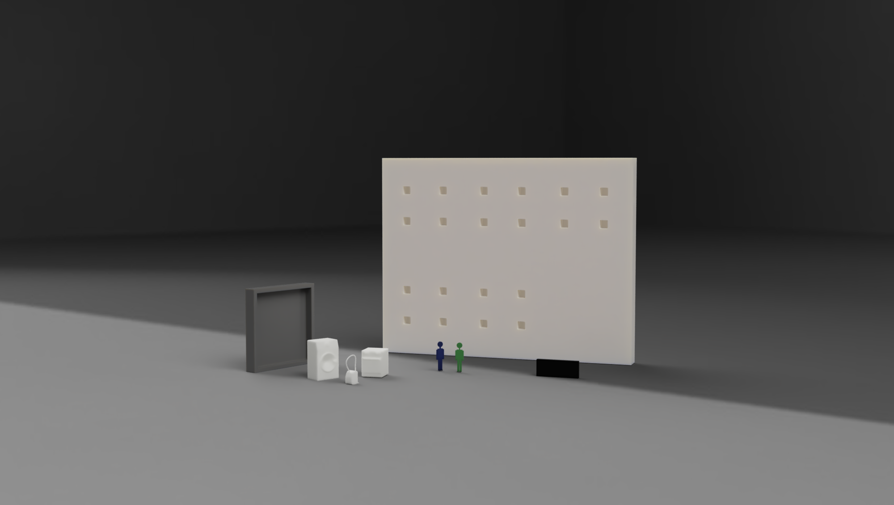

ChoreChecker
This project was part of my bachelor's degree. We created a customisable floor plan with mini figures that would be able to represent a given household. The concept consists of one or more children having a personal mini figurine and are able to scan the objects and furniture corresponding to a certain chore. This way, the children participating would be able to get points.
ChoreChecker was designed to help motivate children to do chores in their household. It consists of modules that can be customised to represent the household's floorplan, as well as figures of, e.g., toilets to symbolise cleaning the toilet, or beds to symbolise making one's bed. When using ChoreChecker, one or more children will have their own personal figure in order to scan the furniture figures, making them light up when the chore has been done.
 A render of the final prototype of the project, showing an example of the board; a room module; furniture; and personal figurines.

Process
The PROBLEM DOMAIN in this context was getting children to do more chores in their homes. Before ideating, we looked at several papers on children's psycology and habits to gain an understanding to why it is important for children to be included in chores, as well as how to motivate them. This included, e.g., extrinsic and intrinsic motivation, and gave us a better basis for designing.
Inspired by Buxton's Design Funnel, we went through three ITERATIONS. Firstly, we sat up criteria based on our background research to ensure a viable product. We ideated on ways to show incentive, chore selection, and possible rewards. After sketching and discussing various combinations of the ideas, we focused the next iteration on the physical aspect. We started this iteration by refining our criteria, and we then created lo-fi prototypes representing four concepts from the first iteration. Finally, we decided on a concept that would viable on its own and explored the form and electronics for the different components.
For the PROTOTYPING part of the process, we designed furniture pieces and personal figurines for 3D printing. The figures all needed to fit RFID tags for the prototype to function. The electronics of the prototype consisted of an LCD screen to show the user's experience; two Arduinos, one for the main functions, and one for the LCD screen; eight LEDs to make the furniture figurines light up; two RFID readers, one for each user; and one buzzer for auditory feedback.